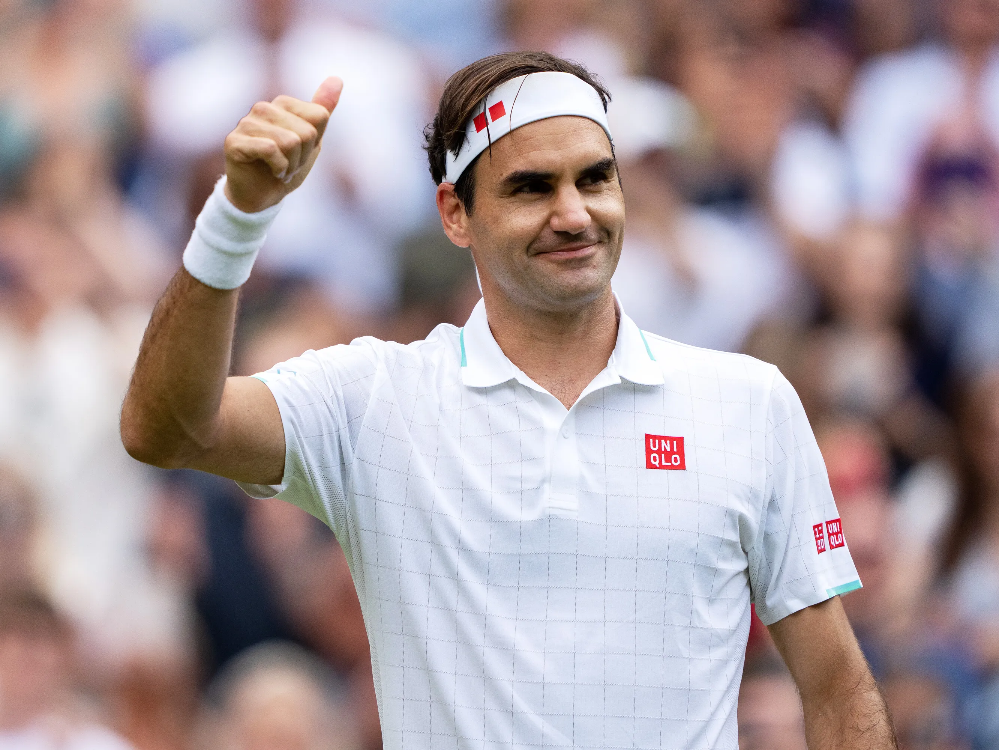

Roger Federer

Wichtige Daten in Roger Federers Karriere
8. August 1981: Geburt in Basel, Schweiz
2003: Erster Wimbledon-Sieg
2009: Vollendung des Karriere-Grand-Slams
2018: 20. Grand-Slam-Titel
2022: Rücktritt vom professionellen Tennis